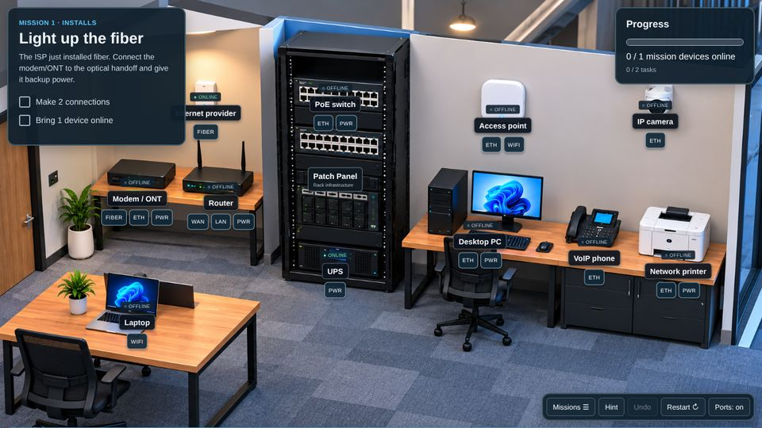
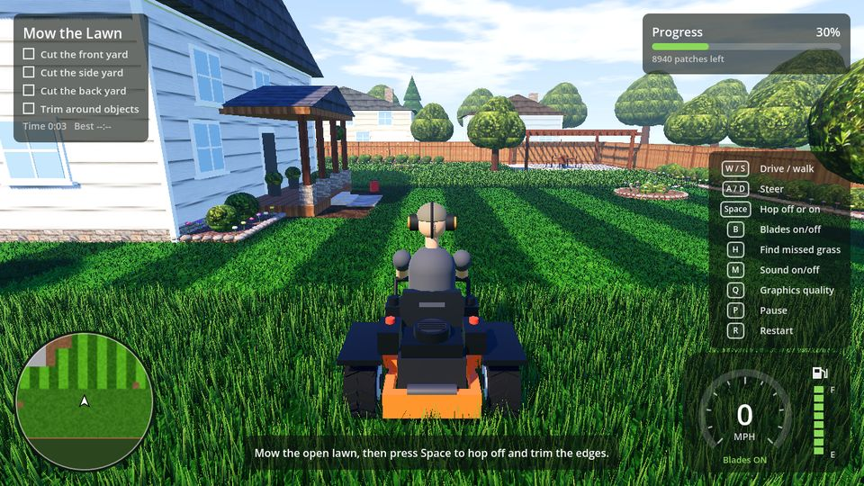
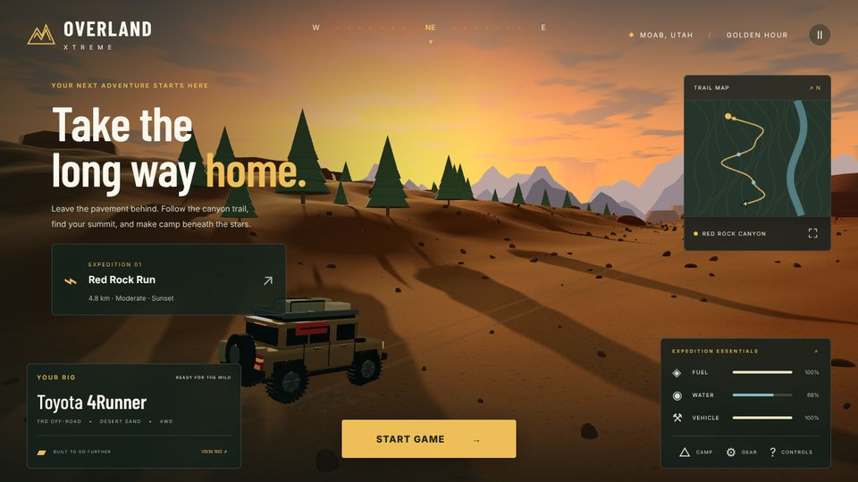
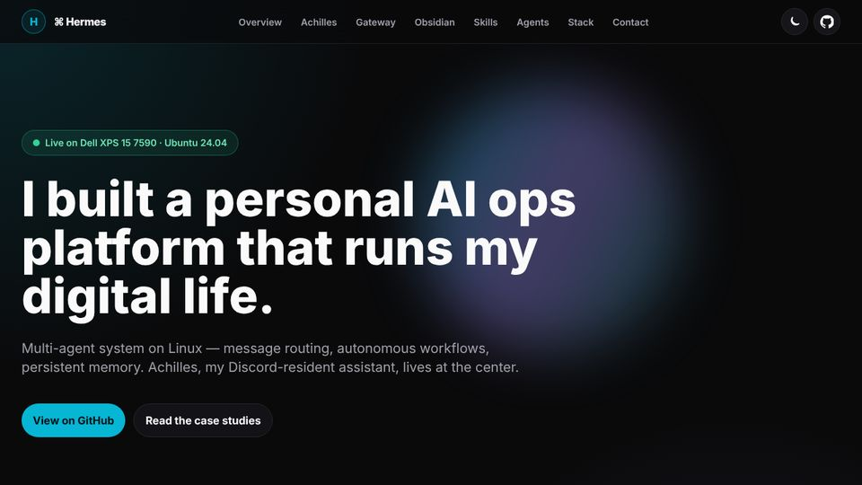
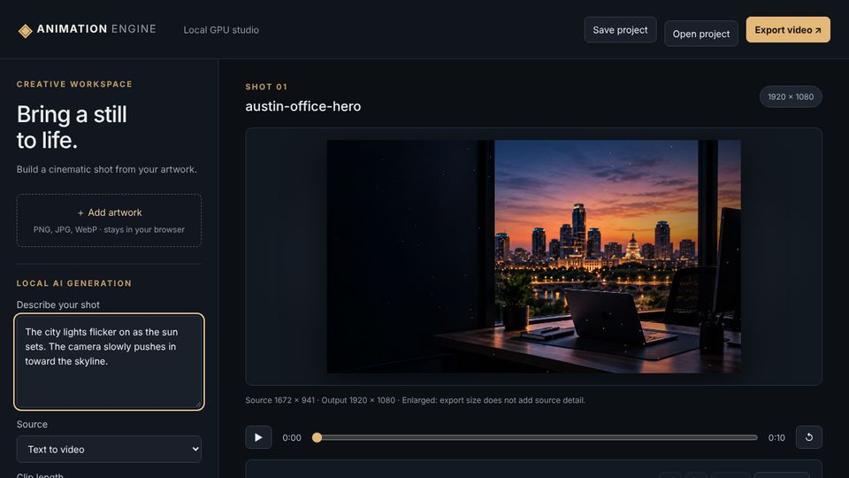

IT Master — Network Lab
An interactive IT training game with 30 missions covering network setup, outages, and cable troubleshooting.
Made with: Built with JavaScript, CSS, and SVG, with a custom network simulation.
How it runs: Runs in the browser with no build step. Mission progress and scores are saved locally.

Lawn Wrangler
A relaxing 3D landscaping game: ride a mower, trim the edges, and cut 99% of the lawn.
Made with: Built with Godot 4 and GDScript, with scenery and sounds generated in code.
How it runs: Runs in a WebGL 2 browser with keyboard or touch controls. Best times are saved locally.

Overlanding Xtreme
A 3D off-road adventure through a red-rock canyon. Collect water, reach the summit, and set up camp.
Made with: Built with JavaScript, Three.js, and Vite, with a procedural canyon and vehicle geometry.
How it runs: Runs in the browser with keyboard or on-screen driving controls. GitHub Actions builds and publishes it.

Hermes — Personal AI Ops Platform
A multi-agent AI system running on a personal Linux workstation, with a Discord-resident assistant ("Achilles"), a unified Telegram and Discord gateway, a git-versioned Obsidian memory, and scheduled autonomous agents.
Made with: Built with Python, systemd, GitHub Actions, and the Anthropic, OpenAI, and FAL APIs on Ubuntu 24.04.
How it runs: Runs as always-on services on a home Linux workstation. The showcase site explains each part.

Animation Engine
A local AI video studio that turns still artwork or a text prompt into short animated shots, with a timeline, camera moves, effects, music, and MP4 export.
Made with: Built with JavaScript, Node.js, and Electron, with a Python engine running the LTX-Video model.
How it runs: Runs locally as a Mac desktop app or in the browser, generating on the computer's own GPU with no cloud account.